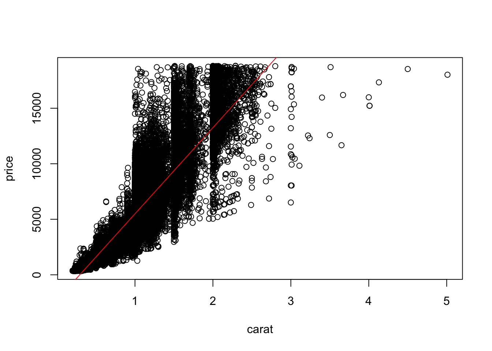

7.1 Polynomial regression models
We first consider polynomial regression models for quantitative predictor variables. They are among the most frequently used curvilinear response models in practice because they are handled easily as a special case of the general linear regression model (@gen-lin-mod).
Next, we discuss several commonly used polynomial regression models.
Then we discuss some of the major issues encountered with polynomial regression models.
7.1.1 Uses of polynomial models
Polynomial regression models have two basic types of uses:
When the true curvilinear response function is indeed a polynomial function.
When the true curvilinear response function is unknown (or complex) but a polynomial function is a good approximation to the true function.
The second type of use, where the polynomial function is employed as an approximation when the shape of the true curvilinear response function is unknown, is very common. It may be viewed as a nonparametric approach to obtaining information about the shape of the response function.
A main danger in using polynomial regression models is that extrapolations may be hazardous with these models, especially those with higher-order terms. Polynomial regression models may provide good fits for the data at hand, but may turn in unexpected directions when extrapolated beyond the range of the data.
7.1.2 One predictor variable – Second order
Polynomial regression models may contain one, two, or more than two predictor variables. Further, each predictor variable may be present in various powers. We begin with the simplest case: one predictor variable with second order.
\[Y_i \hspace{10pt} = \hspace{10pt} \beta_0 + \beta_1 x_i + \beta_2 x_i^2 \hspace{10pt} = \hspace{10pt} \beta_0 + \beta_1 x_i + \beta_{11} x_i^2 + \epsilon_i\] where \(x_i = X_i - \bar{X}\). This model has a quadratic response function (a parabola):
\[E(Y_i) = \beta_0 + \beta_1 x + \beta_{11} x^2 \]
Notes
-
The predictor variable is centered, i.e. expressed as a deviation around its mean \(\bar{X}\), and that the \(i\)th centered observation is denoted by \(x_i\).
The reason for using a centered predictor variable in the polynomial regression model is that \(X\) and \(X^2\) often will be highly correlated. Centering the predictor variable often reduces the multicollinearity substantially and tends to avoid computational difficulties.
An alternative to using centered variables in polynomial regression is to use orthogonal polynomials. This is what R uses in
poly().
Can use different subscripts on the \(\beta\)s so they match up with the power of the corresponding \(x\) term better.
The danger of extrapolating a polynomial response function is illustrated by the response functions in the image above. If this function is extrapolated beyond \(x = 2\), it actually turns downward, might not be appropriate in a given case.
Orthogonal polynomials demo
7.1.3 One predictor variable – Higher orders
The previous model can easily be extended to higher orders. For example, here is a third order model:
\[Y_i = \beta_0 + \beta_1 x_i + \beta_{11} x_i^2 + \beta_{111} x_i^3 + \epsilon_i\]
Polynomial models with the predictor variable present in higher powers than the third should be employed with special caution.
The interpretation of the coefficients becomes difficult for such models, and the models may be highly erratic for interpolations and even small extrapolations.
Note that a polynomial model of sufficiently high order can always be found to fit data containing no repeat observations perfectly. For instance, the fitted polynomial regression function for one predictor variable of order \(n - 1\) will pass through all \(n\) observed \(Y\) values.
Overfitting demo
# combine data
data_sample <- cbind(Y, X[, -1]) %>%
data.frame
colnames(data_sample) <- c("Y", paste0("X", 1:num_x))
# fit highest order model
# -> note perfect fit
mod_overfit <- lm(Y ~ poly(X1, degree = n - 1), data_sample)
tidy(mod_overfit)# A tibble: 10 × 5
term estimate std.error statistic p.value
<chr> <dbl> <dbl> <dbl> <dbl>
1 (Intercept) 9.87 NaN NaN NaN
2 poly(X1, degree = n - 1)1 19.1 NaN NaN NaN
3 poly(X1, degree = n - 1)2 -2.00 NaN NaN NaN
4 poly(X1, degree = n - 1)3 9.07 NaN NaN NaN
5 poly(X1, degree = n - 1)4 -6.83 NaN NaN NaN
6 poly(X1, degree = n - 1)5 -4.14 NaN NaN NaN
7 poly(X1, degree = n - 1)6 -2.22 NaN NaN NaN
8 poly(X1, degree = n - 1)7 -0.428 NaN NaN NaN
9 poly(X1, degree = n - 1)8 -0.383 NaN NaN NaN
10 poly(X1, degree = n - 1)9 0.465 NaN NaN NaNglance(mod_overfit)# A tibble: 1 × 12
r.squared adj.r.squared sigma statistic p.value df logLik AIC BIC
<dbl> <dbl> <dbl> <dbl> <dbl> <dbl> <dbl> <dbl> <dbl>
1 1 NaN NaN NaN NaN 9 Inf -Inf -Inf
# ℹ 3 more variables: deviance <dbl>, df.residual <int>, nobs <int># plot response function
# -> add fitted values to dataset and extract them to plot (have to sort first)
data_sample %$% plot(X1, Y)
augment(x = mod_overfit, data = data_sample) %>%
arrange(X1) %$%
lines(x = X1, y = .fitted, col = "red")7.1.4 Two or more predictor variables – Second order
Again, can extend the previous models to now include a second predictor variable and beyond (now including cross terms (interaction terms), still considered second order). For example, here is a second order model with two predictor variables:
\[Y_i = \beta_0 + \beta_1 x_{i1} + \beta_2 x_{i2} + \beta_{11} x_{i1}^2 + \beta_{22} x_{i2}^2 + \beta_{12} x_{i1} x_{i2} + \epsilon_i\]
where \(x_{i1} = X_{i1} - \bar{X}_1\) and \(x_{i2} = X_{i2} - \bar{X}_2\). This model has a conic response function:
\[E(Y_i) = \beta_0 + \beta_1 x_1 + \beta_2 x_2 + \beta_{11} x_1^2 + \beta_{22} x_2^2 + \beta_{12} x_1 x_2 \]
7.1.5 Implementation of polynomial regression models
Fitting of polynomial models
- Fitting of polynomial regression models presents no new problems since they are special cases of the usual general linear regression model.
Hiearchical approach to fitting
When using a polynomial regression model as an approximation to the true regression function, statisticians will often fit a second-order or third-order model and then explore whether a lower-order model is adequate with partial \(F\) tests.
-
With the hierarchical approach, if a polynomial term of a given order is retained, then all related terms of lower order are also retained in the model.
Thus, one would not drop the quadratic term of a predictor variable but retain the cubic term in the model.
Since the quadratic term is of lower order, it is viewed as providing more basic information about the shape of the response function; the cubic term is of higher order and is viewed as providing refinements in the specification of the shape of the response function.
Regression function in terms of \(X\)
After a polynomial regression model has been developed, we often wish to express the final model in terms of the original variables rather than keeping it in terms of the centered variables. This can be done readily (not showing because not Rs implementation).
The fitted values and residuals for the regression function in terms of \(X\) are exactly the SAME as for the regression function in terms of the centered values \(x\).
The estimated standard deviation however do not translate. They need to be found using alternate methods.
7.2 Interaction regression models
7.2.1 Interaction effects
7.2.2 Interpretation of interaction regression models with linear effects
Interpretation of regression coefficients
- The regression model for two quantitative predictor variables with linear effects on \(Y\) and interacting effects of \(X_1\) and \(X_2\) on \(Y\) represented by a cross-product term is as follows:
\[Y_i = \beta_0 + \beta_1 X_{i1} + \beta_2 X_{i2} + \beta_3 X_{i1} X_{i2} + \epsilon_i\] - The meaning of the regression coefficients \(\beta_1\) and \(\beta_2\) here is not the same as that given earlier because of the interaction term \(\beta_3 X_{i1} X_{i2}\). \(\beta_1\) no longer represent mean change in \(Y\) for a one unit increase in \(X_1\) when all other predictors are held constant at any given level.
- It can be easily shown that the change in the mean response with a unit increase in \(X_1\) when \(X_2\) is held constant is
\[\beta_1 + \beta_3 X_2\]
- Similarly the change in the mean response with a unit increase in \(X_2\) when \(X_1\) is held constant is
\[\beta_2 + \beta_3 X_1\] - Thus, in the regression model above, both the effect of \(X_1\) for given level of \(X_2\) and the effect of \(X_2\) for given level of \(X_1\) depend on the level of the other predictor variable.
-
Below are conditional effects plots because they show the effects of \(X_1\) on the mean response conditional on different levels of the other predictor variable.
For additive models, the effect of \(X_1\) is the same for both levels of \(X_2\) (same slope) (i.e. \(Y\) increases by the same amount when \(X_1\) varies regardless of the level of \(X_2\).
For the reinforcement interaction, the effect of \(X_1\) becomes stronger at hifher levels of \(X_2\). This occurs if both the linear terms and the interaction terms have the same sign.
In the inteference plot, the effect of \(X_1\) is lessoned at higher levels of \(X_2\) because the linear terms and the interaction terms have opposing signs.
See interplot-vignette for explanations on interaction plots in R (they are a bit different than above).
7.2.3 Implementation of interaction effects
-
When interaction terms area dded to a regression model,high multicollinearities may exist between some of the predictor variables and spme of the interaction terms, as well as among some of the interaction terms.
- A partial remedy to improve computational accuracy is to center the predictor variables; i.e. \(x_{ik} = X_{ik} - \bar{X}_k\)
-
When the number of predictor variables in the regression model is large, the potential number of interaction terms can become very large.
- For example, if eight predictor variables are present in the regression model in linear terms, there are potentially 28 pairwise interaction terms that could be added to the regression model. The dataset would need to be quite large before 36 \(X\) variables could be used in the regression model.
-
It is therefore desirable to identify in advance, whenever possible, those interactions that are most likely to influence the response variable in important ways.
In addition to utilizing a priori knowledge, one can plot the residuals for the additive regression model against the different interaction terms to determine which ones appear to be influential in affecting the response variable.
When the number of predictor variables is large, these plots may need to be limited to intemction terms involving those predictor variables that appear to be the most important on the basis of the initial fit of the additive regression model.
7.2.4 Demo
No interaction effect
# combine data
data_sample <- cbind(Y, X[, -1]) %>%
data.frame
colnames(data_sample) <- c("Y", paste0("X", 1:num_x))
# fit interaction model
mod_1 <- lm(Y ~ X1 * X2, data_sample)
tidy(mod_1)# A tibble: 4 × 5
term estimate std.error statistic p.value
<chr> <dbl> <dbl> <dbl> <dbl>
1 (Intercept) 1.62 0.793 2.05 5.11e- 2
2 X1 2.49 0.219 11.4 1.35e-11
3 X2 2.37 0.325 7.27 1.00e- 7
4 X1:X2 -0.132 0.0979 -1.35 1.88e- 1# interaction plot
# -> var1 = variable of interest
# -> var2 = conditioning variable
interplot::interplot(mod_1, var1 = "X2", var2 = "X1",
point = T,
stats_cp = "ci") +
labs(title = "Non significant interaction",
x = "X2",
y = "Estimated coefficient for X1")The algorithm behind the plot is essentially fitting a bunch of models for each unique level of \(X_2\) (the conditioning variable) and plotting a CI for the resulting estimated coefficients for \(X_1\).
Reference line could be at \(Y = 0\), which obviously means non significant, but so does small values of the coefficient (relative to the standard error, have to make \(t\)-stats out of them).
Confidence interval in bottom corner should however be interpreted with respect to 0; it is measuring something different (explained in the vignette). Can also look at the distribution of the conditioning variable with
hist = T, which can help for effects that are significant over part of the range, but not all.
Interaction effect
# combine data
data_sample <- cbind(Y, X[, 2:3]) %>%
data.frame
colnames(data_sample) <- c("Y", paste0("X", 1:num_x))
# fit interaction model
mod_2 <- lm(Y ~ X1 * X2, data_sample)
tidy(mod_2)# A tibble: 4 × 5
term estimate std.error statistic p.value
<chr> <dbl> <dbl> <dbl> <dbl>
1 (Intercept) -0.263 0.923 -0.285 7.78e- 1
2 X1 2.13 0.287 7.42 6.98e- 8
3 X2 2.58 0.341 7.58 4.76e- 8
4 X1:X2 1.94 0.142 13.7 2.13e-13# interaction plot
# -> var1 = variable of interest
# -> var2 = conditioning variable
interplot::interplot(mod_2, var1 = "X2", var2 = "X1",
stats_cp = "ci") +
labs(title = "Significant interaction",
x = "X2",
y = "Estimated coefficient for X1")
7.3 Qualitative predictors
7.3.1 Implementation of qualitative predictors
As mentioned in Section 5.2.1, qualitative, as well as quantitative, predictor variables can be used in regression models.
A qualitative variable with \(c\) classes will be represented by \(c - 1\) indicator variables, each taking on the values 0 and 1.
Need one less predictor variable to avoid linear dependency with the intercept term (see book for explanation).
Additionally, we use indicator variables (rather than allocated codes (e.g. one variable with levels 1, 2, 3 for the three levels)), make no assumptions about the spacing of the classes and rely on the data to show the differential effects that occur.
Demo
# look at anova model (just to get the idea of how indicators are coded)
# investigate data
# -> R dataset with two categorical variables (wool and tension) and one numeric response (breaks)
# -> confirm numeric and look at number of levels for each X
datasets::warpbreaks %>% glimpseRows: 54
Columns: 3
$ breaks <dbl> 26, 30, 54, 25, 70, 52, 51, 26, 67, 18, 21, 29, 17, 12, 18, 35…
$ wool <fct> A, A, A, A, A, A, A, A, A, A, A, A, A, A, A, A, A, A, A, A, A,…
$ tension <fct> L, L, L, L, L, L, L, L, L, M, M, M, M, M, M, M, M, M, H, H, H,…warpbreaks %>% map(class)$breaks
[1] "numeric"
$wool
[1] "factor"
$tension
[1] "factor"warpbreaks %>% select(-1) %>% map(levels)$wool
[1] "A" "B"
$tension
[1] "L" "M" "H"# view replication
# -> it's a balanced design
warpbreaks %>% select(-1) %>% table tension
wool L M H
A 9 9 9
B 9 9 9# design matrix via lm()
# specify model with only categorical predictor
mod_cat <- lm(breaks ~ wool, warpbreaks, x = TRUE)
tidy(mod_cat)# A tibble: 2 × 5
term estimate std.error statistic p.value
<chr> <dbl> <dbl> <dbl> <dbl>
1 (Intercept) 31.0 2.50 12.4 3.61e-17
2 woolB -5.78 3.54 -1.63 1.08e- 1# compare dataset to design matrix of indicator variables
# -> .$model this just gives the dataset where the variables are pulled from
tmp <- cbind(mod_cat$model, mod_cat$x[ , -1])
head(arrange(tmp, breaks), n = 10) breaks wool mod_cat$x[, -1]
1 10 A 0
2 12 A 0
3 13 B 1
4 14 B 1
5 15 A 0
6 15 B 1
7 15 B 1
8 16 B 1
9 16 B 1
10 17 A 0# switch the default level
# -> just needs to be the first level
mod_cat <- warpbreaks %>%
mutate(wool = factor(wool, levels = c("B","A"))) %>%
{lm(breaks ~ wool, data = .)}
tidy(mod_cat)# A tibble: 2 × 5
term estimate std.error statistic p.value
<chr> <dbl> <dbl> <dbl> <dbl>
1 (Intercept) 25.3 2.50 10.1 7.37e-14
2 woolA 5.78 3.54 1.63 1.08e- 17.3.2 Interpretation of regression coefficients
One predictor – Two levels
- Suppose we have the regression model:
\[Y_i = \beta_0 + \beta_1 X_{i1} + \beta_2 X_{i2} + \epsilon_i\]
- where
\[ X_{i1} = \text{quantitative predictor};\\ X_{i2} = \left\{ \begin{array}{ll} 0 & \text{level 1}\\ 1 & \text{level 2} \end{array} \right. \]
- The response function for the model is
\[E(Y) = \beta_0 + \beta_1 X_1 + \beta_2 X_2\].
To understand the meaning of regression coefficients in this model, we have to look at the model for the different levels of the categorical predictor.
Suppose we are looking at the model for level 1, where \(X_2 = 0\). The response function becomes:
\[E(Y) = \beta_0 + \beta_1 X_1 + \beta_2 (0) = \beta_0 + \beta_1 X_1 \hspace{10pt} \text{level 1}\]
This response function is a straight line with \(Y\) intercept \(\beta_0\) and slope \(\beta_1\).
For a level 2 observation, \(X_2 = 1\). The response function becomes:
\[E(Y) = \beta_0 + \beta_1 X_1 + \beta_2 (1) = (\beta_0 + \beta_2) + \beta_1 X_1 \hspace{10pt} \text{level 2}\]
This response function is a also straight line, with the same slope \(\beta_1\), but with \(Y\) intercept \(\beta_0 + \beta_1\).
Thus \(beta_2\) measures the differential effect between level 2 and level 1,
\[ \begin{align*} \beta_0 &= E(Y \mid X_2 = 0)\\ \beta_2 &= E(Y \mid X_2 = 1) - E(Y \mid X_2 = 0) \end{align*} \]
- Here is a visual of the two response functions.
- In general, \(\beta_1\) shows how much higher (or lower) the mean response line is for the class coded 1 than the line for the class coded 0, for any given level of \(X_1\)
One predictor – More than two levels
The above logic and strategy can easily be extended to categorical predictors with more than 2 levels.
Suppose we have the model:
\[Y_i = \beta_0 + \beta_1 X_{i1} + \beta_2 X_{i2} + \beta_2 X_{i2} + \epsilon_i\]
\[ X_{i1} = \text{quantitative predictor}; \\ X_{i2} = \left\{ \begin{array}{ll} 1 & \text{level 2}\\ 0 & \text{otherwise} \end{array} \right.; \\ X_{i3} = \left\{ \begin{array}{ll} 1 & \text{level 3}\\ 0 & \text{otherwise} \end{array} \right. \]
Now \(\beta_3 = E(Y \mid X_2 = 0, X_3 = 1) - E(Y \mid X_2 = 0, X_3 = 0)\)
We may wish to estimate differential effects other than against the default zero level. This can be done by estimating differences between regression coefficients, say if there are 3 levels and we want to compare level 3 to level 2:
\[\beta_3 - \beta_2 = E(Y \mid X_2 = 0, X_3 = 1) - E(Y \mid X_2 = 1, X_3 = 0)\]
This now measures the differential effect (how much higher or lower the response functioni is) of level 3 relative to level 2.
The point estimator of this quantity is, of course, \(\hat{\beta}_3 - \hat{\beta}_2\), and the estimated variance of this estimator is
\[s^2\{\hat{\beta}_3 - \hat{\beta}_2\} = s^2\{\hat{\beta}_3\} + s^2\{\hat{\beta}_2\} - 2 s\{\hat{\beta}_3,\hat{\beta}_2\}\]
- (add variances and two times covariance, but minus). The needed variances and covariance can be readily ob’tained from the estimated variance-covariance matrix of the regression coefficients.
Demo of design matrix intepretation
# again, look at design matrix via lm() for more than two categories
# specify model with only categorical predictor
mod_cat2 <- lm(breaks ~ tension, warpbreaks, x = TRUE)
tidy(mod_cat2)# A tibble: 3 × 5
term estimate std.error statistic p.value
<chr> <dbl> <dbl> <dbl> <dbl>
1 (Intercept) 36.4 2.80 13.0 8.30e-18
2 tensionM -10 3.96 -2.53 1.47e- 2
3 tensionH -14.7 3.96 -3.72 5.01e- 4# compare dataset to design matrix of indicator variables
# -> .$model this just gives the dataset where the variables are pulled from
tmp2 <- cbind(mod_cat2$model, mod_cat2$x[ , -1])
head(arrange(tmp2, breaks), n = 10) breaks tension tensionM tensionH
1 10 H 0 1
2 12 M 1 0
3 13 H 0 1
4 14 L 0 0
5 15 H 0 1
6 15 H 0 1
7 15 H 0 1
8 16 M 1 0
9 16 H 0 1
10 17 M 1 0Demo of modeling with first order quantitative and qualitative predictors
# now use data with continuous predictor
mod_both <- lm(Petal.Length ~ Petal.Width + Species, iris, x = TRUE)
# plot three different response functions
# -> first get all points on there so zoom is correct
iris %$% plot(x = Petal.Width, y = Petal.Length, main = "Constant slope, different intercepts")
iris %>%
filter(Species == "setosa") %$%
points(x = Petal.Width, y = Petal.Length, col = "red")
iris %>%
filter(Species == "versicolor") %$%
points(x = Petal.Width, y = Petal.Length, col = "green")
iris %>%
filter(Species == "virginica") %$%
points(x = Petal.Width, y = Petal.Length, col = "blue")
abline(a = coef(mod_both)[1], b = coef(mod_both)[2], col = "red")
abline(a = sum(coef(mod_both)[c(1,3)]), b = coef(mod_both)[2], col = "green")
abline(a = sum(coef(mod_both)[c(1,4)]), b = coef(mod_both)[2], col = "blue")Now test on levels coefficients’ relative to other than the base level.
# tests on coefficients (different intercepts)
tidy(mod_both)# A tibble: 4 × 5
term estimate std.error statistic p.value
<chr> <dbl> <dbl> <dbl> <dbl>
1 (Intercept) 1.21 0.0652 18.6 2.88e-40
2 Petal.Width 1.02 0.152 6.69 4.41e-10
3 Speciesversicolor 1.70 0.181 9.38 1.17e-16
4 Speciesvirginica 2.28 0.281 8.09 2.08e-13# both the latter two specied have different heights of there regression functions based on the t-tests of beta2 and beta3 (relative to beta1)
# verify standard errors for t tests using matrix results
X <- mod_both$x
varcov_beta <- glance(mod_both)$sigma^2 * solve(t(X) %*% X)
compare(mod_both %>% tidy %>% pull(std.error), varcov_beta %>% diag %>% sqrt)$comparison
[1] TRUE
$`mod_both %>% tidy %>% pull(std.error)`
[1] 0.06524192 0.15224171 0.18094771 0.28132455
$`varcov_beta %>% diag %>% sqrt`
(Intercept) Petal.Width Speciesversicolor Speciesvirginica
0.06524192 0.15224171 0.18094771 0.28132455 # test beta3 - beta2
beta3_beta2_hat <- as.numeric(coef(mod_both)[4] - coef(mod_both)[3])
beta3_beta2_hat_se <- sqrt(sum(diag(varcov_beta)[3:4]) - 2*varcov_beta[4,3])
t_star <- beta3_beta2_hat / beta3_beta2_hat_se
# verify by changing the default level and checking t-stat
# -> need 2 to be the default
mod_both2 <- iris %>%
mutate(Species = factor(Species, levels = c("versicolor", "setosa", "virginica"))) %>%
{lm(Petal.Length ~ Petal.Width + Species, .)}
compare(tidy(mod_both2) %>% filter(term == "Speciesvirginica") %>% pull(statistic), t_star)$comparison
[1] TRUE
$`tidy(mod_both2) %>% filter(term == "Speciesvirginica") %>% pull(statistic)`
[1] 4.431538
$t_star
[1] 4.431538Fitting one line instead of two
- Fitting one line, as opposed to separate regression for each category, is the preferred method because of two reasons:
Since the model assumes equal slopes and the same constant error term variance for each type of firm, the common slope \(\beta_1\) can best be estimated by pooling the two levels.
Also, other inferences, such as for \(\beta_0\) and \(\beta_2\), can be made more precisely by working with one regression model containing an indicator variable since more degrees of freedom will then be associated with \(MSE\).
- More is said about this strategy in Section 7.3.4.
7.3.3 Modeling interactions between quantitative and qualitative predictors
Setup
- Suppose we have the model below. Even though one of the predictor variables in the regression model is qualitative, interaction effects can still be introduced into the model in the usual manner, by including cross-product terms.
\[Y_i = \beta_0 + \beta_1 X_{i1} + \beta_2 X_{i2} + \beta_3 X_{i1} X_{i2} +\epsilon_i\]
- where
\[ X_{i1} = \text{quantitative predictor}\\ X_{i2} = \left\{ \begin{array}{ll} 0 & \text{level 1}\\ 1 & \text{level 2} \end{array} \right. \]
- The response function of the model is:
\[E(Y_i) = \beta_0 + \beta_1 X_1 + \beta_2 X_2 + \beta_3 X_1 X_2\] Meaning of regression coefficients
Again, the meaning of the regression coefficients in response function above can best be understood by examining the nature of this function for each level.
For level 1, \(X_2 = 0\) and thus \(X_1 X_2 = 0\), so
\[E(Y_i) = \beta_0 + \beta_1 X_1 + \beta_2 (0) + \beta_3 (0) = \beta_0 + \beta_1 X_1 \hspace{20pt} \text{level 1}\]
This has intercept \(\beta_0\) and slope \(\beta_1\).
For level 2, \(X_2 = 1\) and thus \(X_1 X_2 = X_1\), so
\[E(Y_i) = \beta_0 + \beta_1 X_1 + \beta_2 (1) + \beta_3 X_1 = (\beta_0 + \beta_2) + (\beta_1 + \beta_3) X_1 \hspace{20pt} \text{level 2}\]
This has intercept \(\beta_0 + \beta_2\) and slope \(\beta_1 + \beta_3\).
We see that \(\beta_2\) here indicates how much greater (or smaller) is the \(Y\) intercept of the response function for the class coded 1 than that for the class coded O. Similarly, \(\beta_3\) indicates how much greater (or smaller) is the slope of the response function for the class coded 1 than that for the class coded O.
Because both the intercept and the slope differ for the two classes in regression model, it is no longer true that \(\beta_2\) indicates how much higher (or lower) one response function is than the other for any given level of \(X_1\).
Thus, when interaction effects are present, the effect of the qualitative predictor variable can be studied only by comparing the regression functions within the scope of the model for the different classes of the qualitative variable.
- When one of the predictor variables is qualitative and the other quantitative, nonparallel response functions that do not intersect within the scope of the model are sometimes said to represent an ordinal interaction. When the response functions intersect within the scope of the model, the interaction is then said to be a disordinal interaction.
Testing interaction effects
Fitting the previous regression model yields the same response functions as would fitting separate regressions for level 1 and level 2. An advantage of using this model with an indicator variable is that one regression run will yield both fitted regressions.
-
Another advantage is that tests for comparing the regression functions for the different classes of the qualitative variable can be clearly seen to involve tests of regression coefficients in a general linear model.
- For example we can do two tests: one on just the slopes and another of if the entire regression lines are identical.
\[ \begin{align*} \text{Test on slopes}\\ H_0&: \beta_3 = 0\\ H_A&: \beta_3 \ne 0\\ \text{Test on entire regression line}\\ H_0&: \beta_2 = \beta_3 = 0\\ H_A&: \text{not both } \beta_2 = 0 \text{ and } \beta_3 = 0 \end{align*} \]
Demo of design matrix interpretation and how constructed with interaction effects
# specify each term individual -> A + B + AB
mod_cat3 <- lm(breaks ~ wool + tension + wool : tension, data = warpbreaks, x = TRUE)
# equivalent shorthand notation to cross factors
mod_cat3 <- lm(breaks ~ wool * tension, data = warpbreaks, x = TRUE)
# extract design matrix
X_lm <- mod_cat3$x
# check how to read indicators (ignoring replication)
warpbreaks %>% select(-1) %>% bind_cols(X_lm) %>% unique wool tension (Intercept) woolB tensionM tensionH woolB:tensionM
1 A L 1 0 0 0 0
10 A M 1 0 1 0 0
19 A H 1 0 0 1 0
28 B L 1 1 0 0 0
37 B M 1 1 1 0 1
46 B H 1 1 0 1 0
woolB:tensionH
1 0
10 0
19 0
28 0
37 0
46 1# -> R has levels - 1 indicators for each categorical variable
# -> the "dropped" base level also isn't explicitly included in any interaction indicator terms
# --> so interactions are taken into account with zeros for actual interactions terms and 0 or 1 for the second factor- All higher order terms involving the base level are also dropped.
Demo to visualize model with interactions
# now use data with continuous predictor
mod_both_int <- lm(Petal.Length ~ Petal.Width * Species, iris)
coef(mod_both_int) (Intercept) Petal.Width
1.3275634 0.5464903
Speciesversicolor Speciesvirginica
0.4537120 2.9130892
Petal.Width:Speciesversicolor Petal.Width:Speciesvirginica
1.3228344 0.1007691 # plot three different response functions
# -> first get all points on there so zoom is correct
iris %$% plot(x = Petal.Width, y = Petal.Length, main = "Different regression lines (different intercepts and slopes)")
iris %>%
filter(Species == "setosa") %$%
points(x = Petal.Width, y = Petal.Length, col = "red")
iris %>%
filter(Species == "versicolor") %$%
points(x = Petal.Width, y = Petal.Length, col = "green")
iris %>%
filter(Species == "virginica") %$%
points(x = Petal.Width, y = Petal.Length, col = "blue")
abline(a = coef(mod_both_int)[1], b = coef(mod_both_int)[2], col = "red")
abline(a = sum(coef(mod_both_int)[c(1,3)]), b = sum(coef(mod_both_int)[c(2,5)]), col = "green")
abline(a = sum(coef(mod_both_int)[c(1,4)]), b = sum(coef(mod_both_int)[c(2,6)]), col = "blue")
# compare to ggplot
ggplot(data = iris,
aes(x = Petal.Width,
y = Petal.Length)) +
geom_point(aes(color = Species)) +
geom_smooth(aes(color = Species),
se = FALSE,
method = "lm",
fullrange = TRUE)# test if only slopes are different
mod_full <- mod_both_int
mod_reduced <- mod_both
anova(mod_full, mod_reduced)Analysis of Variance Table
Model 1: Petal.Length ~ Petal.Width * Species
Model 2: Petal.Length ~ Petal.Width + Species
Res.Df RSS Df Sum of Sq F Pr(>F)
1 144 18.816
2 146 20.833 -2 -2.0178 7.7213 0.0006525 ***
---
Signif. codes: 0 '***' 0.001 '**' 0.01 '*' 0.05 '.' 0.1 ' ' 1# test if entire regression lines are different
mod_full <- mod_both_int
mod_reduced <- update(mod_both, . ~ . -Species)
anova(mod_full, mod_reduced)Analysis of Variance Table
Model 1: Petal.Length ~ Petal.Width * Species
Model 2: Petal.Length ~ Petal.Width
Res.Df RSS Df Sum of Sq F Pr(>F)
1 144 18.816
2 148 33.845 -4 -15.029 28.755 < 0.00000000000000022 ***
---
Signif. codes: 0 '***' 0.001 '**' 0.01 '*' 0.05 '.' 0.1 ' ' 17.3.4 Miscellaneous topics with qualitative predictors
Qualitative predictors only
-
Regression models containing only qualitative predictor variables can also be constructed.
Models in which all explanatory variables are qualitative are called analysis of variance models (ANOVA).
Models containing some quantitative and some qualitative explanatory variables, where the chief explanatory variables of interest are qualitative and the quantitative variables are introduced primarily to reduce the variance of the error terms, are called analysis of covariance models (ANCOVA).
Indicator variables vs quantitative variables
-
Indicator variables can be used even if the predictor variable is quantitative.
For instance, the quantitative variable age may be transformed by grouping ages into classes such as under 21, 21-34, 35-49, etc. Indicator variables are then used for the classes of this new predictor variable.
This is called discretizing the variable.
At first sight, this may seem to be a questionable approach because information about the actual ages is thrown away. Furthermore, additional parameters are placed into the model, which leads to a reduction of the degrees of freedom associated with \(MSE\). Nevertheless, there are occasions when replacement of a quantitative variable by indicator variables may be appropriate.
-
For large data sets, use of indicator variables can serve as an alternative to lowess and other nonparametric fits of the response function.
Cost: For say 1000 observations, the loss of 10 or 20 degrees of freedom is immaterial.
Gain: If you are very much in doubt about the shape of the regression function, which could be highly complex, you could utilize the indicator variable approach in order to obtain information about the shape ofthe response function without making any assumptions about its functional form (not assuming linear or quadratic for example).
Demo
# plot data
diamonds %$% plot(x = carat, y = price)
# fit linear model to see
mod_linear <- lm(price ~ carat, diamonds)
abline(mod_linear, col = "red")
# think a more complex function would be better
# discretize x variable and fit model with indicator variables
mod_discretized <- lm(diamonds$price ~ as.factor(cut_number(diamonds$carat, n = 10)))
mod_discretized %>% tidy# A tibble: 10 × 5
term estimate std.error statistic p.value
<chr> <dbl> <dbl> <dbl> <dbl>
1 (Intercept) 655. 20.3 32.2 5.55e-226
2 as.factor(cut_number(diamonds$carat, … 95.4 31.5 3.03 2.44e- 3
3 as.factor(cut_number(diamonds$carat, … 267. 30.1 8.88 6.59e- 19
4 as.factor(cut_number(diamonds$carat, … 831. 30.6 27.2 1.70e-161
5 as.factor(cut_number(diamonds$carat, … 1435. 29.8 48.1 0
6 as.factor(cut_number(diamonds$carat, … 2441. 28.8 84.9 0
7 as.factor(cut_number(diamonds$carat, … 4384. 30.6 143. 0
8 as.factor(cut_number(diamonds$carat, … 5170. 31.6 164. 0
9 as.factor(cut_number(diamonds$carat, … 7289. 29.2 250. 0
10 as.factor(cut_number(diamonds$carat, … 12281. 31.4 391. 0 # fully discretize model
mod_full_discretized <- lm(price ~ as.factor(diamonds$carat), diamonds)
mod_full_discretized %>% tidy %>% nrow[1] 273# add complex models to plot for comparison
diamonds %$% plot(x = carat, y = price)
abline(mod_linear, col = "red")
diamonds %>%
augment(x = mod_discretized, data = .) %>%
arrange(carat) %$%
lines(x = carat, y = .fitted, col = "blue") # step function because x values in between cutoffs with same predicted y value
diamonds %$% lines(lowess(x = carat, y = price), col = "green")
diamonds %>%
augment(x = mod_full_discretized, data = .) %>%
arrange(carat) %$%
lines(x = carat, y = .fitted, col = "yellow") # when no replication, gets predicted exactly -> but this is still a smooth curve because covers each unique valueComparison of two or more regression functions
To formally test if these two regression lines are different (e.g. if data come from two different populations, such as males vs females), we can use indicator variables and partial \(F\)-tests.
-
We simply consider the different populations as classes of a predictor variable, define indicator variables for the different populations, and develop a regression model containing appropriate interaction terms
If just testing the heights, then just need additive indicator variables for the qualitative predictor.
If also want to consider different slopes (i.e. not assume a common slope among the two populations), then include interaction terms for the continuous predictor(s) and the indicator variable(s).
-
All of the above scenarios require assume that the populations have equal error term variances.
- If the error vanances are not equal, transformations of the response variable may equalize them at least approximately.